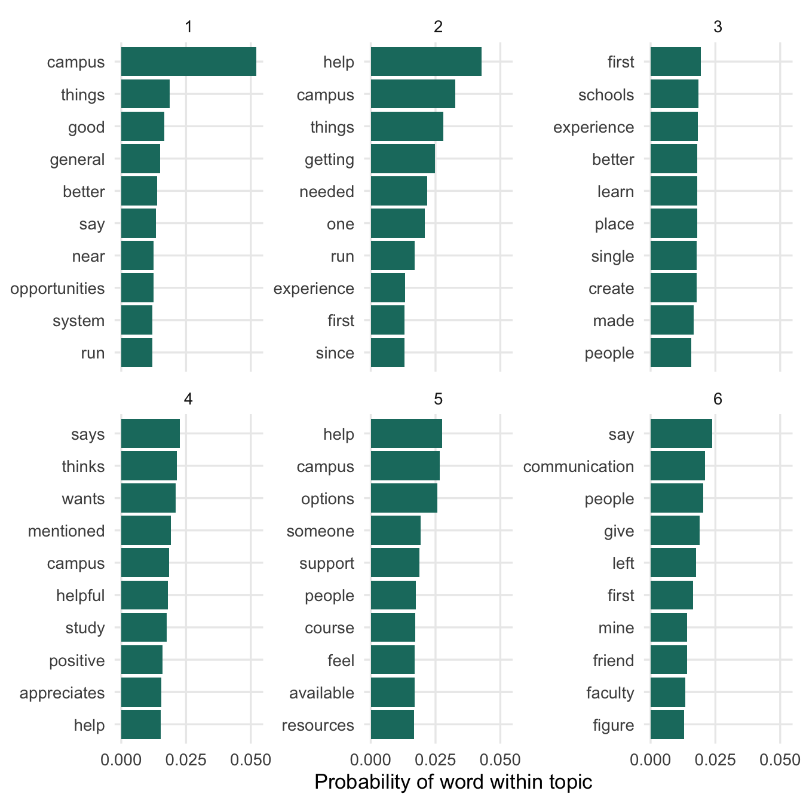
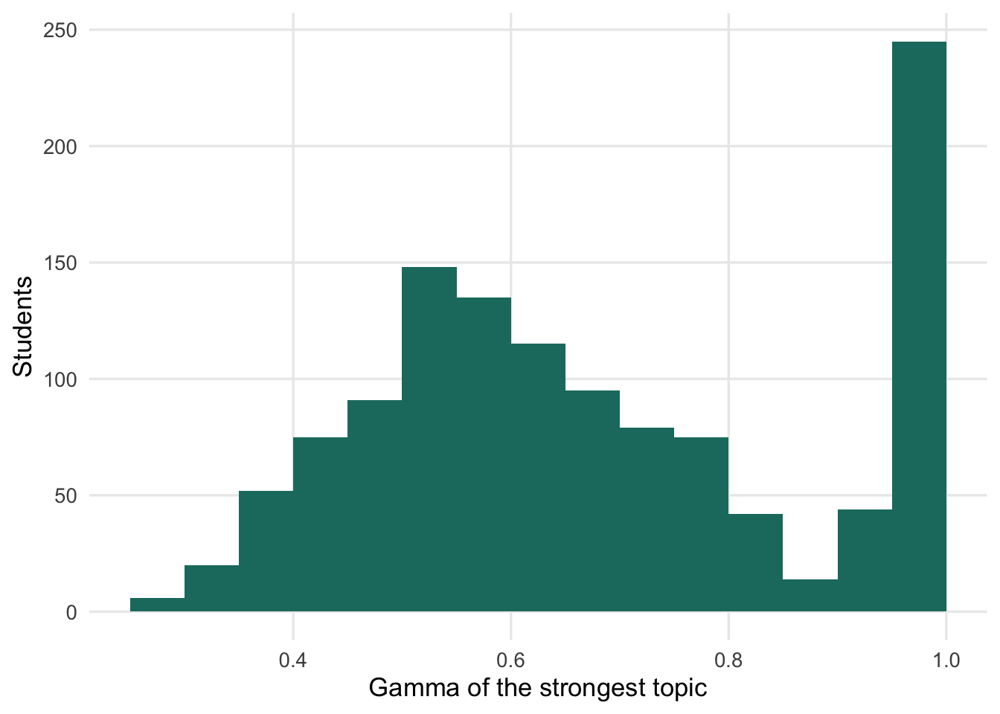
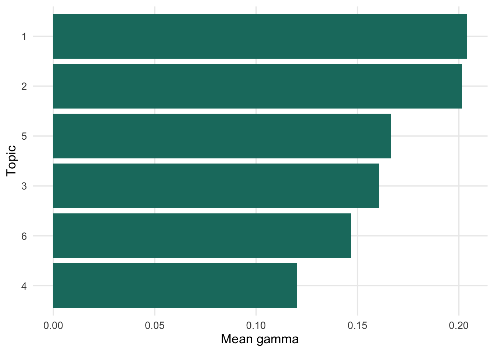
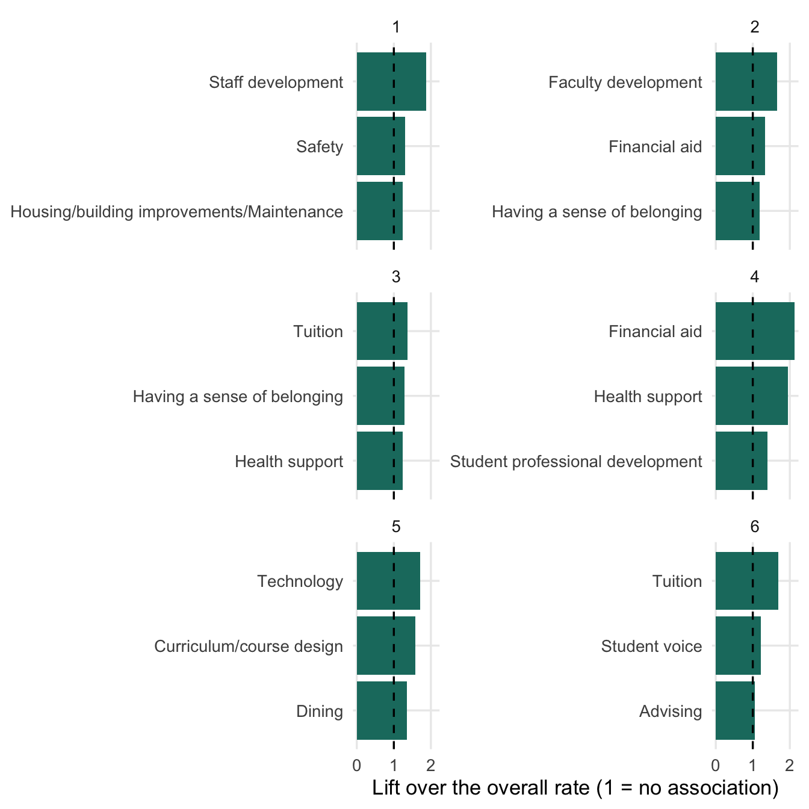

4 Topic Models I: LDA
Data for this chapter: data/vcu_cares_long.csv
TF-IDF told us which words are distinctive of a group we had already defined, such as “undergraduates.” A topic model goes the other way. It proposes the groups. Given only the words in each document, it finds sets of words that tend to appear together and calls each set a topic.
The most widely used topic model is Latent Dirichlet Allocation, or LDA (Blei, Ng, & Jordan, 2003). The name is intimidating, but the idea is not, as the next section shows.
By the end of this chapter you will be able to explain what LDA assumes, fit a model, read its two main outputs (called beta and gamma), and check whether the topics it found are real.
topicmodels is the package that fits the LDA model. tidytext (loaded as before) provides helpers that turn the model’s output into tables we can work with.
4.1 The idea in plain terms
Imagine you could look inside a pile of answers and see that some are about housing (rent, dorms, repairs), some about money (aid, tuition, costs), and some about advising (advisors, appointments, registration). Nobody labeled them; you just notice that certain words keep turning up together. A topic model does this noticing automatically.
LDA works by imagining a simple story about how every document was written:
- Each document has its own mix of topics, such as 60% topic A and 40% topic B.
- Each topic is a list of words with probabilities. Topic A might make “housing,” “rent,” and “dorm” likely, and “advisor” unlikely.
- To write each word of a document, pick a topic according to the document’s mix, then pick a word from that topic’s list.
Of course, nobody really writes this way. But the story is a useful fiction, because it can be run backward. We observe only the words. LDA searches for the topic word-lists and the document mixes that would most plausibly have produced the words we see.
The two things it gives back have Greek-letter nicknames that you will see in all the software:
| Name | What it is | Question it answers |
|---|---|---|
| beta (β) | For each topic, how likely each word is | “What is this topic about?” |
| gamma (γ) | For each document, how much of it belongs to each topic | “What is this document about?” |
Three things to keep in mind from the start:
- A topic is a list of words, not a label. The model does not know that topic 3 is “housing.” You read the top words and name it yourself.
- You choose the number of topics, K. The data do not tell you the right K.
- Documents mix topics. An answer can be partly about advising and partly about money.
4.2 Choosing the documents
LDA learns from words that appear together within a document. Our answers have a median of about a dozen words, and after stop-word removal, six or seven. That is too little for patterns of togetherness to show up.
The fix is to make the document bigger. We combine each student’s answers (strength, concern, and ideas) into one document. Each student’s document then has a few dozen words, enough to reveal which words travel together.
stops <- stop_words |> filter(lexicon == "snowball")
custom_stops <- tibble(word = c("vcu", "student", "students", "like",
"get", "just", "really", "also", "can",
"e", "g", "lot"))
tokens <- vcu |>
unnest_tokens(word, text) |>
anti_join(stops, by = "word") |>
anti_join(custom_stops, by = "word") |>
filter(!str_detect(word, "^\\d+$"))
# Keep words used in at least 5 different students' answers
vocab <- tokens |>
distinct(resp_id, word) |>
count(word) |>
filter(n >= 5) |>
pull(word)
student_counts <- tokens |>
filter(word %in% vocab) |>
count(resp_id, word)
# Drop students left with too few words to say anything
keep <- student_counts |>
group_by(resp_id) |>
filter(sum(n) >= 5) |>
ungroup()
n_distinct(keep$resp_id); n_distinct(keep$word)[1] 1236[1] 419This block does four jobs.
-
Tokenize and clean (the first
tokens <-step). It is the same as in the last two chapters: split into words, remove stop words and bare numbers. (We added “e,” “g,” and “lot” to the domain stop words because they were noise.) -
Build a vocabulary (
vocab).distinct(resp_id, word)keeps one row per student-word pair, so a word used five times by one student still counts once.count(word)then counts how many different students used each word, andfilter(n >= 5)keeps words used by at least five students.pull(word)turns the result into a plain list of words. This pruning is standard: a word used by only one or two students cannot help define a topic, and it slows the model down. -
Count words per student (
student_counts).filter(word %in% vocab)keeps only the vocabulary words, andcount(resp_id, word)counts each word within each student. This is our “documents” table: one row per student-word pair, with a count. -
Drop thin documents (
keep).group_by(resp_id)followed byfilter(sum(n) >= 5)keeps only students with at least five total words left. Inside a groupedfilter(),sum(n)is calculated within each student, not across the whole table.
The last line reports how many students (documents) and how many distinct words (the vocabulary) remain. n_distinct() counts unique values.
4.3 Build the document-term matrix
LDA wants a document-term matrix: a grid with one row per document, one column per word, and the count of that word in that document in each cell. It is mostly zeros, because each student uses only a small part of the vocabulary. Such a grid is called sparse, and the software stores it compactly.
dtm <- keep |> cast_dtm(document = resp_id, term = word, value = n)
dtm<<DocumentTermMatrix (documents: 1236, terms: 419)>>
Non-/sparse entries: 28781/489103
Sparsity : 94%
Maximal term length: 14
Weighting : term frequency (tf)cast_dtm() converts our long table into that grid. Its three options say which column holds the document (resp_id), the term (word), and the value to put in the cells (n, the count). Printing dtm shows its size and how sparse it is: here, about 1,200 students (rows) by about 400 words (columns), and a “sparsity” of about 94%, which means 94% of the cells are zero.
4.4 Fit the model
-
K <- 6saves the number of topics under a name, so that we can change it in one place. -
lda_control <- list(...)bundles the model’s settings in one place, so that we can reuse them later.seed = 664fixes the random starting point (see Appendix A): LDA starts from a random guess and can land in different places on different runs, so fixing the seed makes your results reproducible.alphaandestimate.alphaare explained next. -
LDA()fits the model. The first argument is the matrix;kis the number of topics; andcontrolpasses the settings.
alpha by hand: a model that quietly fails
Alpha controls how mixed each document is. A small alpha says “documents lean toward a few topics.” A large alpha says “documents are an even blend of every topic.”
By default, LDA() estimates alpha from the data. On our short documents, that estimate ran away: when we tried it, the software chose an alpha of about 55. That is so large that every student came out as an almost perfectly even blend of all six topics (each topic about 17%, which is 1/6), and the six topic word lists were nearly interchangeable (“campus,” “help,” “support,” “experience”). The model ran without any error or warning. It simply learned nothing.
Fixing alpha at 0.1 (alpha = 0.1, estimate.alpha = FALSE) tells the model to expect documents that lean toward a few topics, and the topics then separate. You can see the change directly: with the default, the average share of each student’s strongest topic was 0.17; with alpha fixed at 0.1 it is about 0.68.
The lesson is general: a topic model that runs is not a topic model that works. Always check that the documents are not all identical mixtures (we do this below), and always read the topics.
LDA()
-
method: how the model is fitted. The default,"VEM"(Variational Expectation-Maximization; Blei et al., 2003), is fast. The alternative,"Gibbs", is slower but is often preferred for careful results. Both estimate the same model, and both need a sensible alpha: with Gibbs, the default alpha is50 / K, which for K = 6 is about 8.3, and we found it too large here as well. Addalpha = 0.1there too. -
alpha: as above. Smaller values (0.01 to 0.5) give documents that lean toward fewer topics; larger values give blended documents. It is a judgment call, and worth trying a few values. -
iterandburnin(for"Gibbs"): how many rounds of computation to run, and how many early rounds to throw away. More rounds give more stable results and take longer.
4.5 The topics: beta
tidy(lda, matrix = "beta") turns the fitted model into a table with the probability of each word under each topic. The highest-probability words define the topic.
beta <- tidy(lda, matrix = "beta")
top_terms <- beta |>
group_by(topic) |>
slice_max(beta, n = 10, with_ties = FALSE) |>
ungroup()
ggplot(top_terms, aes(beta, reorder_within(term, beta, topic))) +
geom_col() +
scale_y_reordered() +
scale_x_continuous(n.breaks = 3) + # fewer tick labels, so they do not collide in small panels
facet_wrap(~ topic, scales = "free_y", ncol = 3) +
labs(x = "Probability of word within topic", y = NULL)
-
tidy()is a general-purpose function that turns the output of a statistical model into a neat table. Withmatrix = "beta"it returns three columns:topic,term(the word), andbeta(the probability of that word within that topic). - The next step keeps the ten most probable words in each topic, the same
group_by(),slice_max(),ungroup()recipe as before. - The chart draws one panel per topic (
facet_wrap(~ topic, ...)). The optionncol = 3arranges the panels in three columns.scales = "free_y"lets each panel list its own words.
This is the step that requires you. Read each panel and try to name it. Some will be crisp (“housing, rent, campus, apartments, expensive”). Others will be a grab-bag. A grab-bag topic is not a failure of reading; it is information that K or the preprocessing needs work.
4.5.1 Reading the chart from our run
Each panel is one topic. The bars show how likely each word is within that topic, with the most probable word at the top. Here is how to read the six panels we got, and what each tells us.
- Topic 4 is the clearest, and it is about style, not subject. Its top words are “says,” “thinks,” “wants,” “mentioned,” “positive,” and “appreciates.” Those are the third-person phrases interviewers used when they wrote down what a student said instead of quoting them. The model has found a real pattern, but a pattern in how the notes were written, not in what students talked about.
- Generic words dominate several topics. “Campus” and “help” appear near the top of four of the six panels (topics 1, 2, 4, and 5). Topic 1 is the extreme case: “campus” is far ahead of every other word. Words that are common everywhere crowd the lists, which is the reason the chapter offers the distinctive-word list as a second view.
- Topics 3 and 6 are grab-bags. Their bars are nearly flat: no word leads, and the words (“first, schools, experience, better, learn, place” in topic 3; “say, communication, people, give, left, mine, friend” in topic 6) do not add up to a subject you could name. A flat panel like this tells you the model has not found a theme there.
- Topics 2 and 5 sit in between, with one or two leading words (“help,” “campus”) and a tail of generic ones.
Notice also the horizontal scale. Even the most probable word in any topic accounts for only about 5% of that topic’s words. That is normal: a topic spreads its probability over many words, so individual bars are short.
If you were reporting these results, you would name topic 4 (with a caveat about what it is), and say honestly that the others are not clean themes. That is a legitimate and useful finding about the data and the settings, not a failure.
4.5.2 Words that are common everywhere crowd the lists
A word like “events” or “resources” can be high in several topics simply because it is frequent overall. A useful alternative is to rank words by how much more likely they are in one topic than average, which pulls out more distinctive words:
# A tibble: 6 × 2
topic words
<int> <chr>
1 1 wifi, knowledge, desk, front, end, loan, term, laptop
2 2 laptop, loan, clinic, textbook, inconsistent, next, paperwork, improved
3 3 laptop, loan, wifi, single, create, place, learn, looked
4 4 recommends, expanding, cheaper, speaks, lacking, proposes, change, chan…
5 5 laptop, loan, wifi, lacking, safe, ride, clinic, required
6 6 textbook, inconsistent, next, emails, chances, advisors, tech, friend Reading it in stages:
-
group_by(term)thenmutate(avg_log_beta = mean(log(beta)))computes, for each word, its average (log) probability across all the topics. This is the word’s “typical” level. -
mutate(lift = log(beta) - avg_log_beta)subtracts that average from the word’s value in each topic. The result,lift, is large when a word is much more likely in this topic than in a typical one. (Logarithms turn “how many times more likely” into a difference, which is easier to work with.) - We then regroup by topic, keep the eight words with the highest lift, and paste them into one line per topic with
paste(term, collapse = ", ").
Compare these lists with the plot. Distinctive words usually make a topic easier to name; frequent words usually make it easier to defend. Look at both.
Be aware that this measure has a known weakness: it rewards rare words, because a word that is almost never used anywhere can have a very high ratio in the one topic that uses it. You can see that here. The same technology words (“laptop,” “loan,” “wifi”) appear in the lists for several different topics, which is a sign of a rare-word effect and not of four topics about technology. One topic stands out clearly, though: its words (“recommends,” “expanding,” “proposes,” “lacking”) belong to the third-person note-taking style of the paper forms rather than to a subject, much as in Chapter 5. Treat the lift list as a second opinion, and trust a topic only when the probable words, the distinctive words, and the strongest documents all point the same way.
4.6 The documents: gamma
matrix = "gamma" gives each document’s mix of topics.
gamma <- tidy(lda, matrix = "gamma") |>
mutate(resp_id = as.integer(document))
gamma |> filter(resp_id == first(resp_id))# A tibble: 6 × 4
document topic gamma resp_id
<chr> <int> <dbl> <int>
1 1 1 0.953 1
2 1 2 0.00944 1
3 1 3 0.00944 1
4 1 4 0.00944 1
5 1 5 0.00944 1
6 1 6 0.00944 1The result has one row per document-topic pair: the document (the student’s ID, stored as text), the topic, and the gamma. as.integer(document) turns the ID back into a number so we can match it with our other tables. The second line shows the six rows for one student: their share of each topic.
Each document’s gammas sum to 1. How much does a typical student’s document belong to a single topic?
dominant <- gamma |>
group_by(resp_id) |>
slice_max(gamma, n = 1, with_ties = FALSE) |>
ungroup()
ggplot(dominant, aes(gamma)) +
geom_histogram(binwidth = 0.05, boundary = 0) +
labs(x = "Gamma of the strongest topic", y = "Students")
For each student (group_by(resp_id)), slice_max(gamma, n = 1) keeps just their strongest topic. The histogram then shows how big that strongest share usually is.
mean(dominant$gamma) # average share of each student's strongest topic[1] 0.67574061 / K # what a completely blended, "collapsed" model would give[1] 0.1666667This is the check mentioned in the alpha note above. The first number is the average share of each student’s strongest topic. The second is what you would get if every student were an even blend of all topics, which is the signature of a failed model. Our average is far above 1 / K, so the documents do lean toward particular topics. If your own average is close to 1 / K, the model has not found structure; try a smaller alpha.
If the bulk of the bars sits far below 1, documents are genuinely mixed. If it piles up near 1, documents are cleanly single-topic. With short documents you will usually see more mixing than you expect, and “the dominant topic” can be a weak claim.
What the histogram shows in our run. The horizontal axis is how much of a student’s text belongs to their strongest topic, and the bar height is how many students fall in that range. The shape has two parts:
- A broad hump in the middle. Most students peak between about 0.4 and 0.8, with the tallest bars near 0.5 to 0.6. For these students the strongest topic accounts for roughly half to two-thirds of their text, and the rest is spread over other topics. They are genuine blends.
- A tall spike at the far right. Roughly 240 students, close to a fifth of the total, are almost entirely one topic (above 0.95). A small dip just before it (around 0.85 to 0.9) separates them from the hump.
Notice what is missing: nothing falls below about 0.25. With six topics, the lowest possible value is 1/6 (about 0.17), which is the “completely blended” floor we compared against above. So the model is clearly leaning documents toward topics.
The spike is probably a document-length effect. A student with very few words can easily be explained by a single topic, while a longer document draws on several. If you plan to report “the dominant topic” for each student, remember that for the students in the middle hump it describes only about half their text.
4.7 Prevalence: how big is each topic?

summarise(prevalence = mean(gamma)) averages gamma across all students, separately for each topic. The result is each topic’s overall prevalence: roughly, the share of all the text that belongs to it. factor(topic) tells the chart to treat the topic numbers as labels rather than as quantities.
What the chart shows in our run. The bars are sorted from the largest topic to the smallest. Topics 1 and 2 are the biggest, each covering about 20% of all the text. Topics 5, 3, and 6 follow at roughly 15 to 17%, and topic 4 is the smallest at about 12%. The topics are fairly even in size, with no single one dominating.
Two cautions about reading prevalence. First, bigger does not mean more important. Topics 1 and 2 are the two whose top words were mostly generic (“campus,” “help,” “things”), so their size is partly because they absorb the common words that do not belong anywhere else. Large, generic topics are often catch-alls. Second, the smallest topic (4) is the one that is most clearly nameable (the note-taking style). A small topic can be the sharpest one.
4.8 Always read the documents
The word lists are a summary of a summary. For each topic, read the documents where it is strongest.
# A tibble: 3 × 2
gamma text
<dbl> <chr>
1 0.989 Good small class sizes, the TRIO program kept me on track My advisor me…
2 0.983 Really happy with the system, compared to other schools, the how things…
3 0.981 Really happy with the people. Compared to other schools, the email syst…- The first part goes back to the original answers and glues each student’s answers into one string, separated by
" | "(paste(..., collapse = " | "))..groups = "drop"tellssummarise()to ungroup afterward. - The second part picks topic 1, keeps its three strongest students, and uses
left_join()to attach each student’s text. A left join adds columns from a second table by matching on a shared column (resp_id), keeping every row of the first table.
Change topic == 1 to each topic in turn. If the top documents for a topic do not look related, the topic is not a theme, no matter how coherent its word list looks.
4.9 A check against the interviewers’ codes
We have an independent signal: the topics the interviewers ticked. If LDA is finding real themes, a topic’s strongest documents should tend to carry related interviewer codes.
codes <- vcu |>
filter(!is.na(topics)) |>
separate_rows(topics, sep = ";\\s*") |>
distinct(resp_id, topics)
base_rate <- codes |>
count(topics) |>
mutate(base = n / n_distinct(codes$resp_id)) |>
select(topics, base)
# Only students from the original form have interviewer codes, so compare
# like with like: the size of each topic is counted among coded students only
topic_sizes <- dominant |>
filter(resp_id %in% codes$resp_id) |>
count(topic, name = "n_students")
dominant |>
inner_join(codes, by = "resp_id") |>
count(topic, topics) |>
left_join(topic_sizes, by = "topic") |>
left_join(base_rate, by = "topics") |>
mutate(share = n / n_students, lift = share / base) |>
filter(n >= 5) |>
group_by(topic) |>
slice_max(lift, n = 3, with_ties = FALSE) |>
ungroup() |>
ggplot(aes(lift, reorder_within(topics, lift, topic))) +
geom_col() +
geom_vline(xintercept = 1, linetype = "dashed") +
scale_y_reordered() +
scale_x_continuous(breaks = c(0, 1, 2)) +
facet_wrap(~ topic, scales = "free_y", ncol = 2) +
labs(x = "Lift over the overall rate (1 = no association)", y = NULL)
This is the longest block so far, but it follows one idea: for each LDA topic, which interviewer codes show up more than usual?
-
codes: the interviewers’ codes are stored as one text string per answer (“Advising; Safety”).separate_rows(topics, sep = ";\\s*")splits that string so each code gets its own row, anddistinct(resp_id, topics)keeps one row per student-code pair. -
base_rate: how common each code is overall, as a share of coded students. -
topic_sizes: how many coded students have each LDA topic as their strongest one. -
The main pipeline:
inner_join()matches each student’s dominant topic with their codes (an inner join keeps only students who appear in both tables). Thencount(topic, topics)counts students for each topic-code pair;left_join()attaches the topic sizes and base rates; andmutate()computes-
share: the fraction of that LDA topic’s students who have the code, and -
lift:share / base, the ratio of that fraction to the overall rate.
-
-
filter(n >= 5)ignores combinations seen fewer than five times, andslice_max(lift, n = 3)keeps the three codes with the highest lift per topic. - The chart draws the lifts as bars.
geom_vline(xintercept = 1, linetype = "dashed")adds a dashed line at 1, where a code is exactly as common as usual.
Lift is the key idea. A lift of 2 means the code is twice as common among this topic’s students as in the data overall. A lift of 1 means no relationship. A topic with no codes above 1, or with odd ones, is a candidate for being an artifact.
4.9.1 Reading the chart from our run
Each panel is an LDA topic, and the three bars are the interviewer codes most over-represented among that topic’s students. The dashed line at 1 means “no association,” and a bar that reaches 2 means the code is twice as common as usual.
What the chart tells us is sobering, and that is the point of the check:
- Every bar is above 1, but only modestly. Most lifts sit between about 1.2 and 1.8. The largest, in topic 4 (financial aid and health support), reach about 2. These are weak associations. If the topics were capturing the same themes the interviewers coded, we would expect some bars to reach well above 2.
- The largest lifts belong to rare codes. “Staff development” and “faculty development” (topics 1 and 2) are among the least-used codes, so only a handful of students carry them. With so few students, a ratio can swing a lot, and the minimum of five students per combination does not fully protect against that.
- The pairings do not tell a coherent story. Topic 4, for instance, is the note-taking-style topic, yet its strongest links are to financial aid and health support, which have nothing to do with its words. That is the signature of a topic that reflects phrasing more than subject.
So the interviewers’ codes give us no reason to trust these six topics as themes. This is the validation step doing its job: it protects you from reporting a tidy-looking topic list that does not correspond to anything else you know about the data. (Remember that the text here is synthetic and built from templates. With real interview data, you would hope to see stronger links, and if you did not, this chart is where you would find out.)
4.10 How many topics?
There is no right answer, only a trade-off. Fewer topics are broad and easy to read but blur distinct ideas together. More topics are specific but start to split a single theme into near-duplicates.
Fit several values of K and compare them by reading, not just by statistics.
fits <- map(c(4, 6, 8, 10), \(k) LDA(dtm, k = k, control = lda_control))
map_dfr(fits, \(m) tibble(k = m@k, loglik = as.numeric(logLik(m))))# A tibble: 4 × 2
k loglik
<int> <dbl>
1 4 -175428.
2 6 -174813.
3 8 -173804.
4 10 -173238.This block introduces a way of repeating a step without copying and pasting.
-
map(c(4, 6, 8, 10), \(k) LDA(...))takes the list of values and runs the function on each one. The odd-looking\(k) ...is a tiny function written on the spot (“givenk, fit an LDA with that many topics”). The result,fits, is a list of four fitted models. -
map_dfr(fits, \(m) tibble(...))then goes through those models and, for each, builds a one-row table.m@kreads the number of topics stored inside the model (the@is how R reaches inside this kind of object), andlogLik(m)is its log-likelihood, a score of how well the model fits the data.map_dfrstacks the four rows into one table.
Log-likelihood is a fit score (higher, meaning closer to zero here, is better), but it does not pick K for you. A model with more topics can fit the data it was trained on at least as well, so the score tends to keep improving as K grows, and that is what you see: it rises from about −175,400 at four topics to about −173,200 at ten, with no sharp bend that would point to a particular K. It says nothing about whether the extra topics are meaningful. Formal helpers exist: held-out perplexity (topicmodels::perplexity(), which scores the model on documents it did not train on) and coherence measures (the ldatuning package). They narrow the range, but the last step is always a judgment: does this set of topics tell a story I can defend, and that I can verify by reading?
- Fit K = 4, 6, 8, 10.
- For each, print the top words and name every topic.
- Prefer the smallest K where every topic gets a name you would stand behind and no two topics are near-duplicates.
- Read top documents for each topic.
4.11 Cautions
- LDA is stochastic. “Stochastic” means it involves randomness. Change the seed and the topics reshuffle. Stable themes appear across seeds. Unstable ones are probably noise.
- Topics are not categories. A document’s strongest topic is a summary, not a classification.
- Short text is hard. We combined answers per student to get enough words. Even so, expect messier topics here than with long documents.
- Preprocessing choices matter. Different stop-word lists and vocabulary cutoffs will change the topics. Document yours.
In the next chapter, we use a model that lets topic prevalence vary with student characteristics, so that “which topics do graduate students bring up more?” becomes a question the model can answer directly.
4.12 Summary
- LDA finds topics (lists of words that go together) and describes each document as a mix of them.
- Beta answers “what is this topic about?”; gamma answers “what is this document about?”
- You choose K, and you name the topics yourself. Both are judgment calls.
- Make documents long enough to show co-occurrence, and prune very rare words.
- Always validate: read the top documents, and compare with any labels you already have.